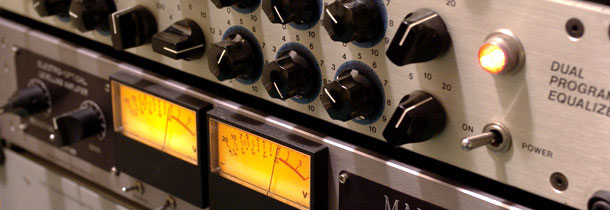
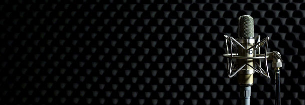

Sylvain Biguet
ingénieur du son
A propos
"Dans un monde où triomphe la quantité (toujours plus de groupes, plus de promo, de concerts, de volume, de mp3 etc...), mais avec moins de budget et moins de temps, peut-on encore accéder à la qualité ?
Loin de la compression à outrance et de la guerre du volume, je pense que tout artiste doit pouvoir offrir à sa musique un enregistrement qui retranscrit fidèlement l'intensité, la ferveur et le cœur qu'il met à la jouer, et ce, à chaque écoute. Tout mon travail est là. En m’appuyant sur un matériel délibérément inscrit dans l’histoire du son, je propose l’accès à une réelle identité sonore."
Pour en savoir plus, lisez cette interview : http://www.coreandco.fr/interviews/sylvain-biguet-200.html
Player
Matériel
- Recorder
- Magix Samplitude 11 Pro
- Interfaces
- Carte son RME Fireface 800
- Convertisseur AD/DA 24 canaux SSL Alphalink AX
- Mixer
- Sommateur analogique 16 canaux API
- API 8200 x2
- API 7800
- Phoenix Audio NICERIZER 8
- Monitoring
- Dynaudio Acoustics BM15A
- Adam A7
- Preamps/DI's
- Summit TPA200B (tube, stéréo) x1
- Aurora Audio GTP8 (Neve 1073 preamps reissue)
- API 512C x6
- DI Avalon U5 x3
- Equalizers
- Millenia NSEQ2 (tube, stéréo) x1
- Summit EQP200B (tube, stereo) x1
- API 550B x2
- Processeurs de dynamique
- Chiswick Reach Stereo Valve Compressor (Fairchild) (tube, stereo) x1
- Manley ELOP (tube, stéréo) x1
- Anthony De Maria Labs AD1000 (tube, mono) x1
- Micros
- Wunder Audio CM7 (neumann U47 long body reissue)
- Royer R121 (ruban, appairées) x2
- AKG C414B ULS x2
- AKG C451E (capsules cardio et mono) x2
- Shure SM57 x5
- Shure SM58 x4
- Shure Beta98 x3
- Shure Beta52 x1
- Shure Beta91 x1
- Beyerdynamic M88 x1
- Sennheiser MD421 x1
- Backline
- Batterie DW fûts Maple Keller 24”x16”, 12”x11”, 16”x14”
- Caisse claire Sonor Artist Brass 14”x5,5”
- Tête Marsahall JCM 800 Mk2
- Baffle 4x10” Rickenbaker openback
- Divers
- Presonus Monitor Station
- Boitier de réamplification Radial X-AMP x2
- Trigger de grosse caisse Roland RT7K x1
- Trigger de caisse claire ddrum DDTS Pro x1
- Préampli casques 6 canaux Furman HA6B
- Préampli casques 4 canaux Presonus HB4
- Casques Beyerdynamic DT770 x2
Tarifs
Attention : les tarifs indiqués sur cette page sont purement indicatifs. Me contacter directement ici pour obtenir un devis.
Prises de son
Studio nomade :
200€/jour. (Suivant la longueur du projet, ou dans le cadre d’un contrat de coproduction, les prix peuvent être dégressifs, me contacter directement pour obtenir un devis). Déplacement sous la responsabilité logitique de l’ingénieur du son, à la charge du client (défraiement du transport).
Studio fixe :
300€/jour, tarif fixe, non dégressif, compris la mise à disposition des 2 ingénieurs du son ainsi que de leur matériel.
Hébergement :
mise à disposition de couchages, cuisine et salle de bain, draps et repas non compris. Studio de La Senelle : 10€/nuitée par musicien. Moulin de Favry : 60€/nuitée forfait groupe.
Location de backline :
50€/ampli
Mixage
200€/jour. (Possibilité de tarifs dégressifs aussi).
Mastering
Mastering standard :- 40€/morceau les 5 premières chansons
- 30€/morceau à partir du 6ème
- 50€/montage de l’album (ordre des morceaux, espacement entre les titres, dénomination des indexs, etc.)
- 60€/morceau les 5 premières chansons
- 40€/morceau à partir du 6ème
- 50€/montage de l’album
Enregistrement nomade
De nos jours, trois options se présentent aux musiciens qui veulent enregistrer leur musique :
où la notoriété et le matériel sont au rendez-vous. Mais les tarifs sont la plupart du temps hors de portée des musiciens autoproduits ou des petites structures de production, à moins de louer les lieux pour un laps de temps souvent trop court, parfois même sans ingénieur du son qui sache exploiter les installations.
Structure beaucoup plus économique dont le résultat, faute d’un équipement et d’une expérience suffisantes, ne dépassera pas un enregistrement fait à la maison. Loin de la plus value légitimement attendue par les artistes.
Cette solution a pour avantage de permettre aux musiciens de disposer de tout le temps nécessaire. Mais dans la plupart des cas cette option, faute d’un équipement et d’une expérience suffisantes, ne permet pas de dépasser de bonnes maquettes.
D’un autre côté, le développement du home studio et de la MAO apporte aux musiciens de solides connaissances en matière d’enregistrement, ce qui ne peut qu’enrichir leurs échanges avec l’ingénieur du son lors de vraies séances studio, surtout justement lorsque des maquettes ont été réalisés préalablement à la maison.
Sylvain BIGUET propose une solution d’enregistrement nomade, conciliant les avantages du home studio et du studio professionnel. Son matériel réellement haut de gamme, son savoir faire reconnu et son expérience importante permettent d’apporter qualité, chaleur et transparence dans n’importe quel lieu (maisons individuelles, salles de spectacles, studios, greniers, théâtres…) tout en proposant des tarifs qui ne sont pas alourdis par de coûteux investissements immobiliers.